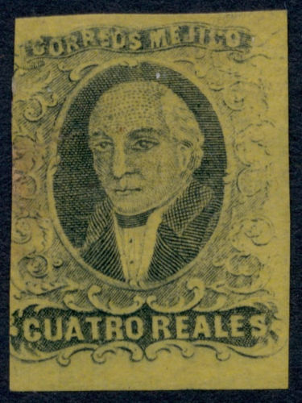
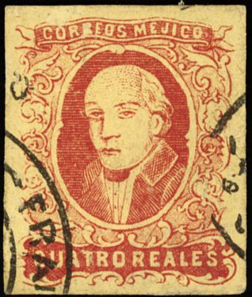
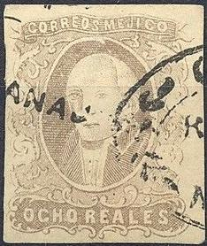
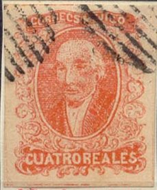
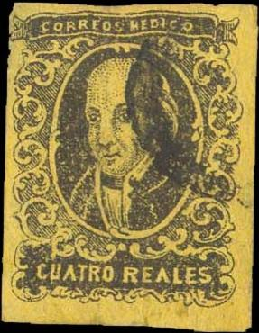
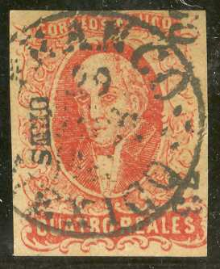
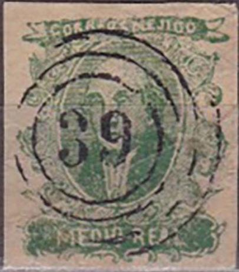

Genuine stamps or reprints.
Mexique - Mexiko
Return To Catalogue - Mexico Overview - Mexico 1856-1863
Note: on my website many of the
pictures can not be seen! They are of course present in the
catalogue;
contact me if you want to purchase it.
A nice website on the early issues of Mexico can be found at: http://oneof.stampsofmexico.org/.

Genuine stamps or reprints.



(2 r green and 4 r red on yellow forgeries)


Although the 8 r stamp is clearly a different type of forgery, it
has the same "07 - 188? GUANARA" as the 2 r forgery.
This forgery has the label with "CORREOS MEJICO" too straight. The execution is very poor. I have also seen the 1/2 r blue, 2 r black on red, 4 r black on yellow, 8 r lilac and 8 r black on lilac of this particular forgery (see Bill Claghorn's forgery site: http://members.tripod.com/claghorn1p/Mexico/Mex01x.htm).


More forgeries of the 8 r lilac stamp in a slighly different type
from the other values, but probably made by the same forger.


(A forgery with inscription "CORREOS MEJIOS")
The above forgery has the wrong inscription "CORREOS MEJIOS", it is described as the second forgery in Album Weeds. Only the value 1/2 r is mentioned. It might have been made by the same forger who made the forgeries above.


These forgeries have a perfect ellipse in the center (the genuine
stamps have ornaments on top, below and at the sides of the
ellipse). I've usually seen them to be cancelled with a pattern
of dots, but a circular cancel also exists.



Forgeries made by the same forger? I have seen the 4 r red on
yellow forgery with the same cancel as the 4 r red; ellipse
consisting of lines. Also the numeral "408" cancel.

Forgery of the 1864 issue with the same "408" bogus
cancel.
Forgery with a totally different bottom value label. The design
looks very similar to that of the fifth forgery.
Note the special shape of the top and bottom label in these forgeries. I've been told that these are so-called Riesa forgeries (probably the stamp forger Engelhardt Fohl.



"CORREOS MEDICO" forgeries.
In the above forgeries, the bottom ornaments are different from the genuine stamp. The inscription reads wrongly "CORREOS MEDICO". The upper label is too straight. There are many other differences. I have also seen the value 8 r green on brown of this particular forgery. I've been told that these are so-called Behrmann forgeries. It is described as the third forgery in Album Weeds. Other values exist with wrong inscriptions: "MEDIO REALES" and "UN REALES" (see image above). the 2 r has inscription "DOS. R EALES" with a larger space between the "R" and "E", the first image was obtained from Bill Claghorn's forgery site: http://members.tripod.com/claghorn1p.
This appears to be the forgery described in the
book 'How to detect forged stamps' by Thomas Dalston (1865) where
the following text can be found
"The colouring of the above imitations is extremely poor
and thin, and the lettering very indistinct and irregular. The
top inscription is Medico instead of Megico. They are, in fact,
so poorly executed that it is utterly impossilbe to victimize
collectors"
Besides the above values, I have also seen the values 1 r black on green and 4 r red on yellow. I have seen the cancels 'PUEBLA FRANCO' in two lines (only part of this cancel is visible on a single forgery), 'PUEBLA' in one line, 'FRANCO MEXICO' in a circle and a grid cancel consisting of a circle with squares (see the above sheet of forgeries for more details).


The following forged cancels can be found in The Fournier Album of Philatelic Forgeries (which contains forgeries made by Francois Fournier):
Another cancel exists used by Fournier: 'FRANCO 1 FEBR. 72 MORELIA' in a single circle, similar to the above circular cancels.
I don't know on which forgeries Fournier used these cancels, but the image of some 4 r red stamps shown next bear a cancel 'FRANCO MEXICO 29 OCT. 18..' in a single circle, identical as shown above. Note that the last two numbers of the year are very blotched and cannot be identified. Are the next forgeries Fournier products?
 
Fournier forgeries(?) of the 4 r values, they both have a 'FRANCO
MEXICO 29 OCT. 18..' cancel and a 'URES' overprint. Also a 1 r
forgery with another Fournier cancel.
Two forgeries as they can be found in the Fournier Album.

One of the previously described forgeries, enhanced by Fournier
with a "FRANCO EN TUXILA CHICHO" cancel.

Yet another type of forgery with a "39" numeral cancel.
More dangerous are forged overprints; the next stamps with gothic 'Mexico' overprint are such forgeries:

(forgeries)
I have also seen a reprint of the 4 r red on yellow with a forged cancel.
Sperati forgery of the 1/2 r value.
The forger Sperati made a deceptive forgery of the1/2 r value. The distinguishing characteristics can be found in the BPA book.
For stamps of Mexico from 1864 to 1865, click here.
Stamps - Timbres-Poste - Estampillas - Sellos


{kind=link}
{kind=link}
{kind=link}
{kind=link}
{kind=link}
{kind=link}
{kind=link}
{kind=link}
{kind=link}
{kind=link}